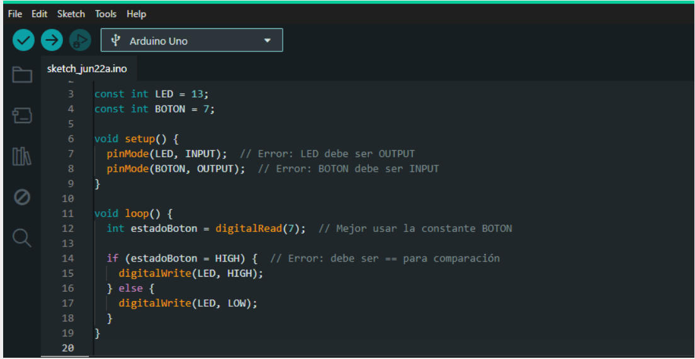
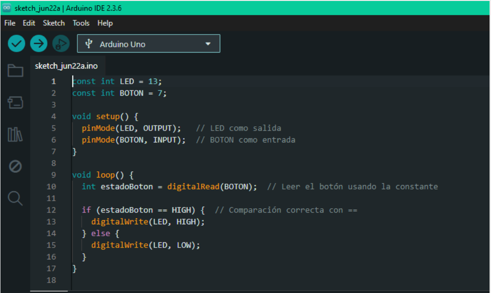

Contenidos
Pensamiento lógico y programación.
El pensamiento lógico es una habilidad cognitiva fundamental para resolver problemas, tomar decisiones y estructurar ideas. En el ámbito educativo, la programación se convierte en una herramienta eficaz para desarrollarlo, ya que permite a los estudiantes trabajar con secuencias, estructuras condicionales y ciclos repetitivos de forma estructurada y comprensible. Según Cedeño (2023), la programación en educación básica facilita la construcción del pensamiento computacional, al fomentar procesos de análisis, planificación y evaluación de resultados que estimulan el razonamiento lógico y la toma de decisiones informadas.
Programación con Arduino IDE.

Arduino IDE es una plataforma de desarrollo que permite programar microcontroladores a través de un lenguaje basado en C++. En el entorno educativo, su interfaz sencilla y su enfoque en la programación por bloques o texto ayudan a los estudiantes a iniciarse en lalógica computacional sin requerir conocimientos avanzados previos. Como señalan Rivas et al. (2022), esta plataforma permite diseñar programas simples en los que se activan sensores, luces o motores, convirtiendo la programación en una experiencia tangible y significativa que fortalece la comprensión de causas y efectos.
Diseño de circuitos con Fritzing.

Fritzing continúa siendo una herramienta clave en esta fase del proyecto, ya que permite representar visualmente la estructura electrónica de un circuito antes de montarlo físicamente. Esta representación ayuda a los estudiantes a entender cómo fluyen los datos o la energía a través de los componentes electrónicos. Montoya (2023) afirma que Fritzing favorece la planificación técnica en estudiantes, mejorando la precisión de los montajes electrónicos y reduciendo errores durante la fase práctica.